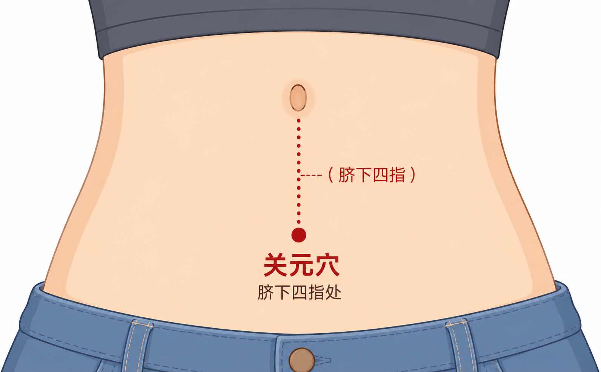
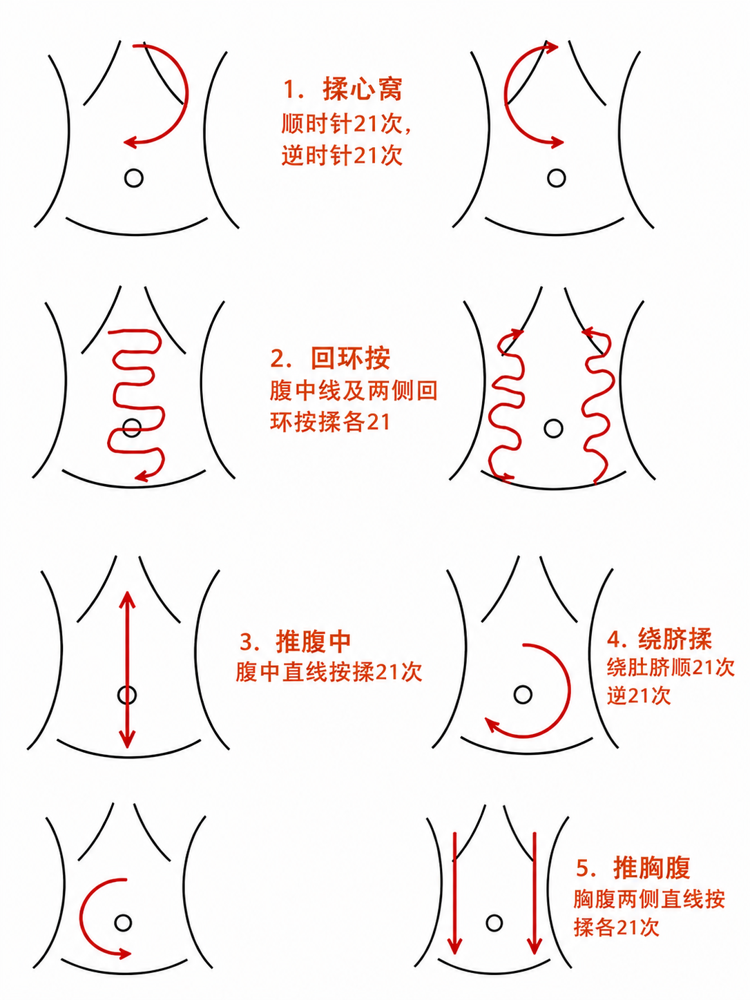
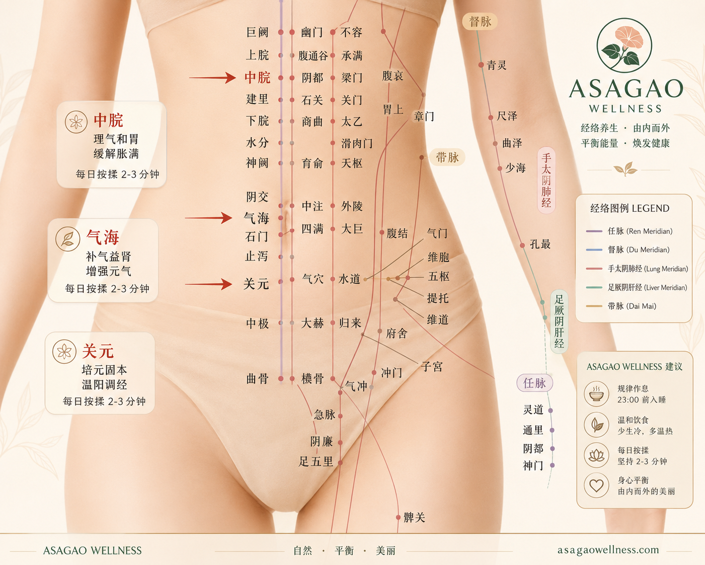
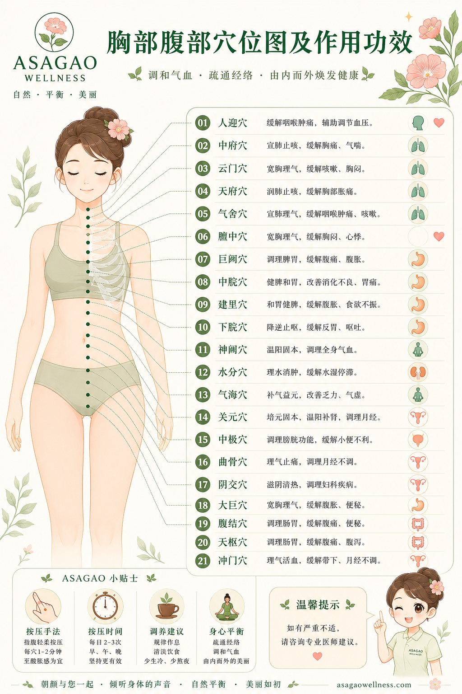
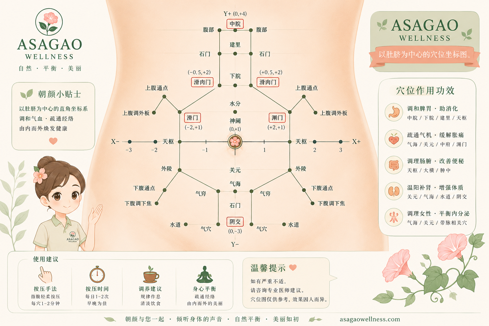
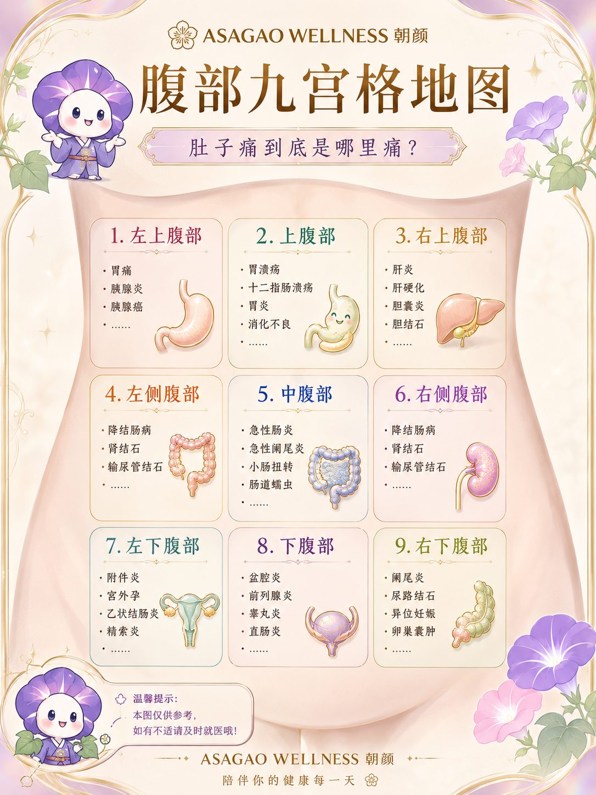

The Abdominal Care ritual focuses on grounding, digestive comfort, abdominal relaxation, and restoring a sense of inner stability through slow therapeutic touch.
Inspired by Eastern healing philosophy and quiet luxury wellness, the ritual supports nervous system regulation, breathing awareness, emotional grounding, and deep internal calm.
Gentle abdominal techniques, warmth, acupoint awareness, and mindful pacing encourage the body to soften, settle, and reconnect with a sense of safety and centeredness.





